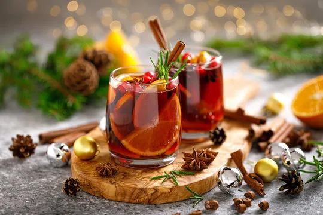

Alcohol
Weather-driven paid ads campaign success for a festive beverage

When it comes to the holiday season, nothing evokes festive cheer quite like a rich, indulgent festive alcoholic beverage (or two). As consumers instinctively reach for their drink of choice to add a touch of decadence to their celebrations, the opportunity to enhance brand engagement becomes paramount. To ensure my client was front of mind, I helped craft a targeted campaign designed to elevate the beverage's status as the quintessential choice for holiday festivities, focusing on driving brand awareness and customer engagement.
The challenge
Despite its strong association with the Christmas season, the brand faced a significant challenge in engaging its target audience leading up to the holidays. Previous marketing strategies, characterised by costly homepage takeovers, broad publisher deals, and generic creatives, failed to generate the desired levels of awareness and engagement. The brand needed a more effective and innovative approach to reach consumers actively seeking cozy holiday drinks and party solutions.
The goal was clear: develop a campaign that would boost brand awareness and increase meaningful engagement for the festive alcoholic beverage during the critical holiday shopping season.
The solution
To achieve our objectives, we introduced a strategy that utilised real-time weather data to deliver personalised, engaging content. By leveraging dynamic creatives powered by a weather-based API, we showcased tailored drink suggestions based on current weather conditions in the viewer's location. This personalised approach created an interactive experience that resonated far beyond traditional marketing methods. Eight custom creatives were developed to present unique festive drinking experiences.
-
01
Cold weather
A comforting hot chocolate was promoted during colder-than-average temperatures, appealing to those craving warmth and comfort.
-
02
Warmer days
For milder temperatures, a classic drink served over ice was highlighted, catering to those seeking a refreshing option.
-
03
Rainy days
On rainy days, we featured a cozy fireside hot chocolate to enhance the ambiance of comfort and relaxation.
-
04
Snowy conditions
If snow was detected or temperatures fell below freezing, an ad showcasing an indulgent dessert pairing with the beverage was displayed.
Using DV360 as the primary distribution channel, this targeted approach allowed the festive alcoholic beverage brand to reach a broad audience while driving high-quality traffic to its website, significantly boosting brand visibility.
The result
The campaign delivered exceptional outcomes, significantly enhancing brand awareness and engagement. We achieved a 37% increase in click-through rate (CTR) compared to the previous year's standard creatives, demonstrating the effectiveness of our targeted strategy. Additionally, a 62% decrease in bounce rate highlighted the quality of traffic generated by the campaign, indicating that our tailored approach successfully captured user interest and increased engagement.
The success of this innovative campaign established a new standard for the brand's Christmas strategies. Impressed with the results, the brand committed to adopting this approach for all future holiday campaigns, solidifying it as a key component of their marketing strategy.
Want results like these?
Grab a 30-minute call and we'll work out whether persona-led creative strategy fits your brand.
Next case study